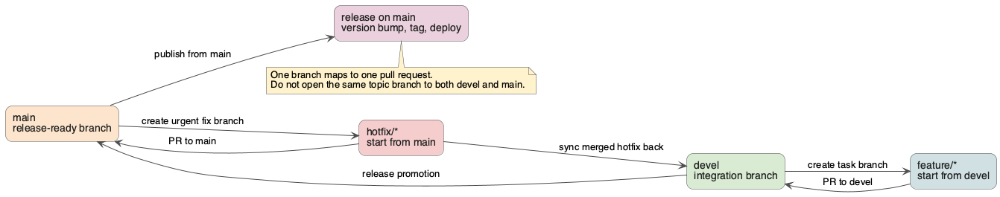

Release Process
This is the source-of-truth runbook for making a new HestiaStore release.
For contribution workflow, community standards, and project history, use Contribute and Community.
For day-to-day branch selection, task worktrees, and pull request targeting,
use Git and Worktree Workflow. This page covers the
release-specific exception: a clean dedicated main worktree.
Branching model

Normal work starts from devel, merges back to devel, and reaches main
through the release flow. Hotfixes start from main, merge back to main, and
must then be synced into devel.
When you ask Codex to use the release-maven-library skill, it performs the
full local release workflow described on this page: prerequisite checks,
pre-release verification, release version bump, release commit, release tag,
Maven Central deployment, next snapshot bump, next snapshot commit, and Git
pushes.
The only manual step is publishing the GitHub release on the repository
homepage at https://github.com/jajir/HestiaStore/releases.
Codex can prepare the release title and body, but it cannot click Publish
release in the GitHub web UI.
If you are using Codex in this repository, use the release-maven-library skill. The skill follows the same workflow documented here and uses the helper scripts under .agents/skills/release-maven-library/scripts/.
Release Principles
- Keep release work focused on release and versioning changes only.
- Do not mix unrelated refactors, dependency upgrades, or API changes into a release commit.
- Stop immediately if the working tree is dirty, the current version is inconsistent, a forbidden snapshot dependency is found, or verification fails.
Versioning
Hestia Store uses Semantic Versioning:
X: major version for incompatible API changesY: minor version for backward-compatible feature workZ: patch version for backward-compatible fixes
Development versions use the -SNAPSHOT suffix:
Release preparation should start from a snapshot version and convert it to the matching release version.
The release will be published to Maven Central. Release configuration secrets are placed at the Maven settings file ~/.m2/settings.xml.
Releases must be prepared from a clean main branch worktree with push access
to the repository and tags.
- Java 17 and Maven are installed.
- You are in the repository root.
- The branch and working tree are clean.
- Maven Central credentials are configured in
~/.m2/settings.xml. - GPG signing is configured for the Maven
releaseprofile.
Example settings.xml fragments:
<settings>
<servers>
<server>
<id>central</id>
<username>YOUR_USERNAME</username>
<password>YOUR_TOKEN</password>
</server>
</servers>
<profiles>
<profile>
<id>release</id>
<properties>
<gpg.executable>gpg</gpg.executable>
<gpg.passphrase>YOUR_GPG_PASSPHRASE</gpg.passphrase>
</properties>
</profile>
</profiles>
</settings>
Setup Maven Central account secrets
This provides org.sonatype.central:central-publishing-maven-plugin plugin secrets to enable login to the Maven Central account where release data will be placed.
You must have an account with a verified namespace org.hestiastore at central.sonatype.com. From the Account section, generate a key and password and place them in the central server entry shown above.
Release Checklist
- Verify the working tree is clean.
- Detect the current Maven version.
- Confirm the current version is a snapshot.
- Run
mvn clean verify. - Confirm there are no forbidden snapshot dependencies or plugins.
- Bump from
X.Y.Z-SNAPSHOTtoX.Y.Z. - Run verification again after the release version change.
- Commit and tag the release.
- Deploy the release artifact.
- Bump to the next snapshot version.
- Verify again after the next snapshot bump.
Step-by-Step Procedure
1. Checkout and update the main branch
Release work is the main branching exception to the normal devel flow. Start
from a clean main worktree and fast-forward it before changing versions:
2. Run the standard release verification
Run the standard release verification script:
That script runs the release verification used by the skill:
mvn -N install
mvn -pl engine,wal-tools,monitoring-micrometer,monitoring-prometheus,monitoring-rest-json-api,monitoring-rest-json,monitoring-console-web -DskipTests package
mvn -pl wal-tools,monitoring-micrometer,monitoring-prometheus,monitoring-rest-json-api,monitoring-rest-json,monitoring-console-web test
mvn -pl engine test -Dtest=IntegrationSegmentIndexMetricsSnapshotConcurrencyTest
mvn -pl monitoring-prometheus test -Dtest=HestiaStorePrometheusExporterTest
mvn clean verify
3. Bump to the release version and commit it
Review the changed pom.xml files, then convert the snapshot version to the
release version and commit it:
./.agents/skills/release-maven-library/scripts/bump-version.sh 0.0.12
git commit -am "release: version 0.0.12"
The release commit should remain focused on versioning files only. Review at least these modules before committing:
org.hestiastore:hestiastore-parentorg.hestiastore:engineorg.hestiastore:wal-toolsorg.hestiastore:monitoring-rest-json-apiorg.hestiastore:monitoring-micrometerorg.hestiastore:monitoring-prometheusorg.hestiastore:monitoring-rest-jsonorg.hestiastore:monitoring-console-web
4. Validate the release profile
Run the root release profile so the parent POM and all release modules are validated together:
Do not deploy engine alone. The release must be run from the repository root
so the parent POM and all publishable modules stay aligned.
The benchmarks module participates in the build but is not deployed because
its POM sets maven.deploy.skip=true.
5. Create the release tag
6. Deploy the release from the repository root
Deploy the release to Maven Central from the repository root:
7. Push the release commit and tag
Push both main and the release tag after deployment succeeds:
8. Bump to the next snapshot version and verify again
./.agents/skills/release-maven-library/scripts/prepare-next-snapshot.sh 0.0.13-SNAPSHOT
./.agents/skills/release-maven-library/scripts/verify-release.sh
git commit -am "post-release: bumped to 0.0.13-SNAPSHOT"
git push origin main
9. Publish the release on GitHub
This step is manual and must be completed on the GitHub repository homepage, not in the generated documentation site:
- Go to https://github.com/jajir/HestiaStore/releases and choose
Draft a new release. - Select the existing tag
release-0.0.12. - Keep
mainas the target branch. - Set the release title to
Release 0.0.12. - In the
Writefield, use the text generated from the template below. - If the release contains breaking changes, add a dedicated
Breaking changessection with migration steps. - Press
Publish release.
<dependencies>
<dependency>
<groupId>org.hestiastore</groupId>
<artifactId>engine</artifactId>
<version>0.0.12</version> <!-- Replace with the actual version -->
</dependency>
</dependencies>
After the release bump, there should be no remaining forbidden snapshot versions in the Maven project files.
Helper Commands
Display dependency updates:
Set a version manually without backup POMs:
Related Files
.agents/skills/release-maven-library/SKILL.md.agents/skills/release-maven-library/references/release-checklist.mdAGENTS.md